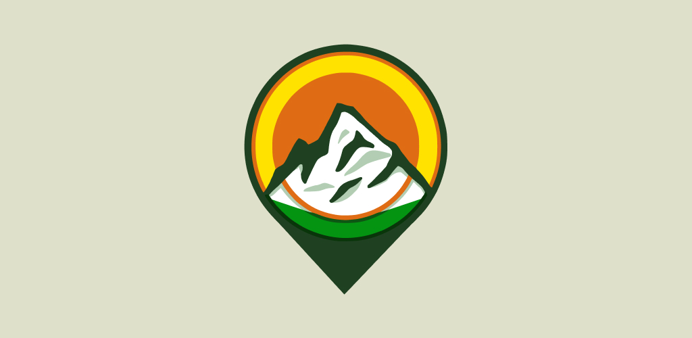

Projects
Things I've built on my own, not for companies or other people, just my personal projects.

Osvoji Vrhove A hiking app that lets users complete challenges, earn badges and points, and compete with other users. Tomovic Family Tree A tree of the Tomovic surname, originating from the Кучи tribe, with more than 1000 people, it is still growing as users can propose new relations. ZadnjaKlupa Font A custom-made font. "Zadnja klupa" means "last bench" in Serbian. I got the inspiration in high school looking at names carved into the last bench, hence the name ZadnjaKlupa (Last Bench).